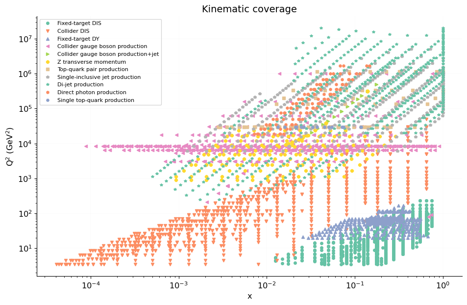
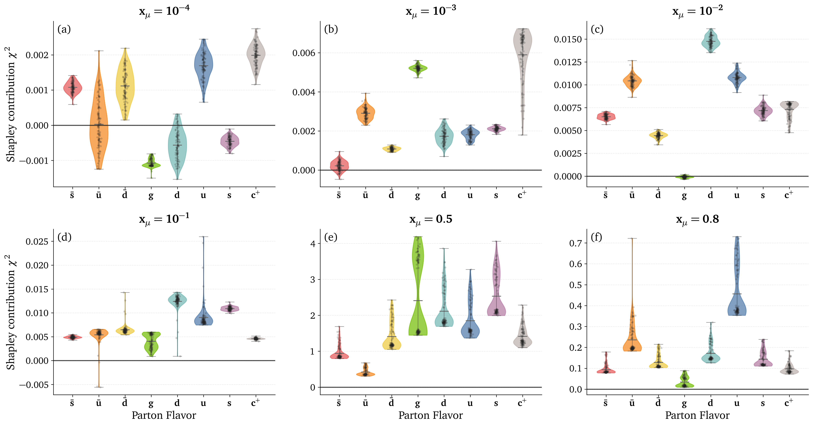
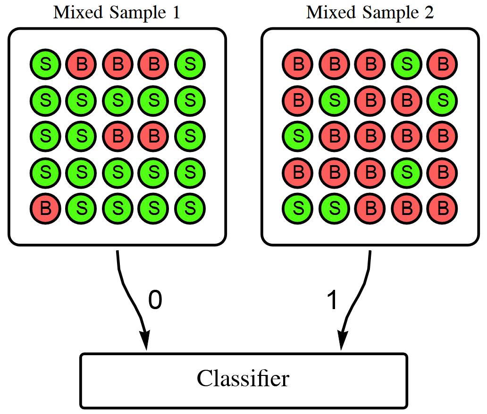
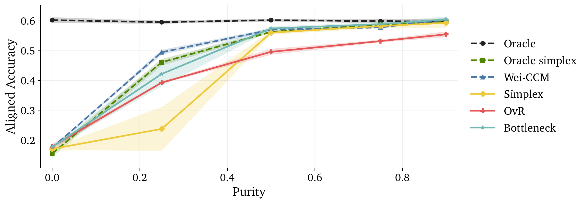
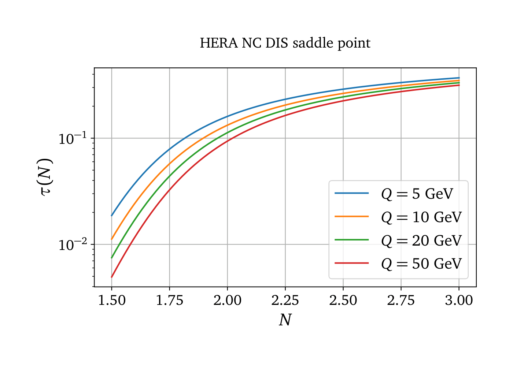

Shapley values meet NNPDF
Raphaël Bonnet-Guerrini1,In collaboration with: Stefano Carrazza2, Dakshansh Chawda2, Stefano Forte2, Eva Groenendijk2, Vincenzo Piuri1, and Ramon Winterhalder2
1Computer Science Department, University of Milan;
2TIF lab, Physics Department, University of Milan
Why do we need Parton Distribution Functions (PDFs)?
LHC collides protons, but the hard interaction occurs between their fundamental constituents, the partons.
Partons are not directly observed: the detector only sees final-state particles.
PDFs are the latent probability model we infer.
A proton is composed of quarks and gluons, whose momentum distribution is described by PDFs.
Parton Distribution Functions (PDFs) and NNPDF

- Describe the probability of finding a parton carrying a fraction \(x\) of the proton's momentum at a given energy scale \(Q^2\).
- Predicts outcomes of particle collisions.
- NNPDF uses NN to model PDFs without assuming a specific functional form.
- Trained on data from different experiments.
PDF fitting: an inverse problem
NNPDF solves an inverse problem: we have a set of experimental data and we want to find the underlying PDFs that best explain the data.

Theory (QCD, QED) allows us to compute the observable values \(\mathcal{O}_n\) from the PDF space, and the inverse is done by fitting precise experimental data.
What data enter the global fit?

Kinematic coverage of the NNPDF dataset in the \((x,Q^2)\) plane.
Diverse processes:
DIS, Drell-Yan, jets, top, photons...
Uneven coverage:
dense data islands, sparse regions.
Critical regions:
important predictions can rely on indirect constraints.
PDF space
The PDF space is a 8-dimensional space (flavor basis or evolution basis).
Why does a given flavor look like this in a given \(x\) region? Which datasets are responsible for this behavior?

Makes it difficult to perform systematic tests and obtain a clear understanding of each flavor on the fit.
NNPDF a black box model ?
Black-box systems are a recurrent interpretability issue in modern DL. We can take inspiration from the methods developed there to solve the interpretability problem of NNPDF.

XAI answer : What's the impact of one feature on the output of the model ?
Shapley Values
Inherited from game theory: represent the value of the contribution \(\phi\) of a player \(i\) within a coalition \(S\).
\[ \phi_i = \sum_{S \subseteq N \setminus \{i\}} \frac{|S|! \, (|N| - |S| - 1)!}{|N|!} \left[ v(S \cup \{i\}) - v(S) \right] \]where \(N\) is the set of all players, \(S\) is a subset of players not including \(i\), and \(v(S)\) is the value of the coalition \(S\).
Computational cost scales exponentially with the number of players \(2^N\).
SHAP adapts SV for DL application. Makes them computable for large numbers of players (features) given certain assumptions and approximations.
Applying Shapley values to NNPDF
Applying Shapley Values to NNPDF, we treat the PDF of each flavor as an input of our black-box model.

- \(\phi_i\) is the Shapley Value for flavor \(i\).
- \(N\) is the total number of flavors.
- \(S\) is a subset of flavors not including \(i\).
- \(v(S)=\chi^2\) is the value of the coalition when all flavors in coalition \(S\) are perturbed, while \(i\) and the rest of the flavors remain untouched.
SHAP in particle physics
Standard SHAP makes Shapley values tractable for ~50+ features by assuming features are independent (additivity).
But PDF flavors are strongly correlated → the independence assumption breaks.
Only 8 players (PDF flavors) → the Shapley sum for each flavor runs over just \(2^7=128\) coalitions → we compute the exact Shapley value: no independence assumption, all correlations kept.
Perturbing a PDF: a calibrated bump

Gaussian bump averaged over both directions
We probe one flavor in a chosen \(x\) region with a smooth Gaussian bump, its height calibrated to the PDF uncertainty so it is comparable across flavors.
To avoid directional bias, we average the value over the \(+\) and \(-\) bumps:
Coalitions, and where correlations come from
A coalition \(S\): perturb the flavors in \(S\), leave the rest untouched; \(v(S)=\chi^2\).
Correlations are physical: sum rules tie flavors together, perturbing one forces compensating shifts in the others, so total proton momentum and quark counting stay fixed.
How to read a Shapley value
\(\phi_j\) = marginal change in \(\chi^2\) when flavor \(j\) is perturbed, same units as \(\chi^2\).
Always per dataset \(\mathcal{D}\):
different data → different contributions.

- \(\phi_j > 0 \): \(\mathcal{D}\) constrains flavor \(j\)
- \(\phi_j \approx 0 \): \(\mathcal{D}\) insensitive to \(j\)
- \(\phi_j < 0 \): baseline locally suboptimal (a pull in the fit)
The Shapley analysis in NNPDF
Loading trained PDFs from n3fit.

For selected datasets, we can run the following Shapley analysis:
- All possible coalitions of perturbed PDFs are being created.
- We compute the \(\chi^2\) for each coalition.
- For each single flavor, we compare the \(\chi^2\) of the coalition, with the flavor perturbed and not perturbed.
Probing any kinematic region

Slide the bump across \(x\): the tool isolates which flavor each \(x\)-region constrains, independently. Sensitivity tracks the data and fades where there is none.
Shapley uncertainty using PDF replicas

Running over PDF replicas gives an uncertainty on every contribution, not just a point estimate.
Per dataset constrains

Allow per-dataset analysis. Which allows to directly trace and quantify the dataset-flavor; jets and \(t\bar t\) are clearly gluon-driven around \(x\approx0.5\).
The surprising gluon dip

The tool flags a counter-intuitive gap near \(x\approx0.1\); the cause is a known QCD feature: there the gluon's evolution stalls (its kernel passes through zero), so the data cannot constrain it → \(\phi_g\approx0\).
Quantitative fold design
NNPDF tunes its hyperparameters with \(K\)-fold cross-validation: the data are split into folds. For that to be unbiased, each fold should constrain the PDFs similarly.

Shapley values give a quantitative handle on fold homogeneity. Open the way for quantitative fold design.
Conclusion
Exact, correlation-aware Shapley values open up the NNPDF black box, no feature-independence approximation.
- Rank each dataset's impact → optimize data selection and \(K\)-fold design.
- Diagnose uncertainties from the replica spread of \(\phi\).
- Model-agnostic → transferable to any black-box pipeline.
Multiclass Classification without Labels
via Posterior Simplex Geometry
Raphaël Bonnet-Guerrini1,In collaboration with: Johann Ioannou-Nikolaides2, Troels Petersen2, and Vincenzo Piuri1
1Computer Science Department, University of Milan;
2Niels Bohr Institute, University of Copenhagen
CWoLa: Classification Without Labels
Binary theorem: given two mixtures \(M_1\), \(M_2\) of pure samples \(S\) and \(B\) with signal fractions \(f_1 > f_2\), the optimal classifier separating \(M_1\) from \(M_2\) is also optimal for separating \(S\) from \(B\).
\[ L_{M_1/M_2}=\frac{f_1p_S+(1-f_1)p_B}{f_2p_S+(1-f_2)p_B}=\frac{f_1L_{S/B}+(1-f_1)}{f_2L_{S/B}+(1-f_2)} \]
If \(f_1 > f_2\), \(L_{S/B}\) and \(L_{M_1/M_2}\) define the same classifier — no labels, no proportions.
A well-established method in particle physics

Anomaly detection
model-agnostic resonance / new-physics searches
Classification from impure samples
quark/gluon and jet tagging
360+ citations, including 270 in HEP Always the binary case: signal vs background. The guarantee does not extend to \(K>2\).
Why binary CWoLa breaks for \(K>2\)
- Binary CWoLa gives only a one-dimensional ordering — not a \(K\)-class representation.
- One-vs-rest works, but needs \(M-1\) separate classifiers — expensive and unstable.
Our move: train one \(M\)-way classifier to predict mixture identity, and read the latent classes off its posterior geometry.
The setup: \(K\) classes, \(M\) mixtures
Each mixture \(m\) has density built from shared class-conditionals \(p_k\) and unknown weights \(\pi_{mk}\):
We observe only the data \(x\) and the mixture id \(m\) — never the latent label \(y\), never the mixing matrix \(\Pi\).
The simplex intuition
Trained only on mixture id, the posterior cloud organizes on a \((K-1)\)-simplex inside \(\Delta^{M-1}\) — its vertices are the latent classes.

Two prior-free recoveries
(R1) Post-hoc simplex fitting
- Train the \(M\)-way classifier.
- Vertex-hunt the posterior cloud \(\to \hat V\).
- Decode each point by barycentric coordinates.
(R2) Architectural bottleneck
- Factor \(g_\theta(x)=\hat\Pi\,\alpha_\theta(x)\).
- Simplex enforced during training.
- Strong inductive bias for weak trunks.
Assumptions: shared class-conditionals, full-rank \(\Pi\) (\(M\ge K\)), separability (anchors), uniform mixture sampling. Both also recover the hidden mixing matrix \(\Pi\).
The geometry is really there

CIFAR-10, \(K=3\), \(M=6\): trained only on mixture id, yet points cluster at vertices that match the oracle classes — via post-hoc fit (a) or bottleneck (b).
More mixtures → better recovery

CIFAR-10. At fixed \(K=10\), extra mixtures add redundant constraints: simplex rises \(0.55\,(M{=}10)\to{\sim}0.65\,(M{=}30,50)\), nearly matching the known-prior oracle.
Real data: Galaxy10 DECaLS

Real telescope images, \(K=M=10\). As mixture purity drops the problem becomes unidentifiable — but our methods degrade gracefully and track the oracle-prior baselines at moderate/high purity.
Strongest prior-free method
| Technique | Method | Accuracy ↑ | ECE ↓ |
|---|---|---|---|
| Supervised | Oracle | 0.802 | 0.032 |
| Prior-aware | Wei CCM | 0.686 | 0.069 |
| Oracle Simplex | 0.661 | 0.116 | |
| Prior-free | OvR | 0.476 | 0.272 |
| Bottleneck | 0.503 | 0.197 | |
| Simplex | 0.584 | 0.123 |
Galaxy10, \(K=10,M=20\). Simplex beats OvR by +10.8 accuracy points and halves calibration error — closing most of the gap to oracle-prior methods.
You don't even need to know \(K\)

\(K\) enters only the post-hoc fitter, so it is discoverable: a held-out reconstruction error plus a gap statistic recover \(K_{\text{true}}=10\) on Galaxy10.
Conclusion
Mixture identity alone recovers multiclass structure — no labels, no priors.
- The mixture posterior is a \((K-1)\)-simplex; its vertices give both the classes and the hidden mixing matrix.
- Purity and anchors still matter — recovery degrades gracefully, not silently.
- Model-agnostic → scalable to label-scarce science.
Thank you !

Backup Slides
Backup: why the gluon dips at \(x\approx0.1\)
At small \(x\), the gluon is generated by QCD evolution, dominated by the gluon–gluon kernel \(\gamma_{gg}(N)\).
\(\gamma_{gg}(N)\) crosses zero near \(N=2\) (Mellin space) → evolution stalls, so data cannot constrain the gluon there.
A saddle-point map \(x(N)\) puts \(N=2\) at \(x\approx10^{-1}\)–\(2\times10^{-1}\) — exactly where the dip appears.

Backup: DIS datasets

HERA (collider, small \(x\)) and fixed-target (large \(x\)) constrain different \(x\) regions; the gluon stays small in DIS.
Shapley Values Pseudocode
# INPUT: observables, mu,sigma,amplitude, n_samples, n_flavors = n
# OUTPUT: shapley_vals[], baseline_chi2, cache
baseline_chi2 = evaluate_chi2(observables, flavor_subset=[]) # v({})
cache = {} # map subset -> v(S)
all_subsets = power_set(0..n-1) # exclude full-set if desired
for i in 0..n-1:
SV = 0
for S in all_subsets:
if i in S: continue
# v(S)
if S not in cache:
cache[S] = evaluate_chi2(observables, flavor_subset=list(S), mu,sigma,amplitude, n_samples)
vS = cache[S]
# v(S ∪ {i})
S_with = S ∪ {i}
if S_with not in cache:
cache[S_with] = evaluate_chi2(observables, flavor_subset=list(S_with), mu,sigma,amplitude, n_samples)
vSw = cache[S_with]
Δ = vSw - vS # marginal contribution
s = |S|
w = factorial(s) * factorial(n - s - 1) / factorial(n)
SV += w * Δ
shapley_vals[i] = SV
# RETURN: shapley_vals, baseline_chi2, evaluated_coalitions=|cache|
# COMPLEXITY: time ~ O(n · 2^n · cost_eval), space ~ O(2^n) (memoized)
Shapley Values weight
In game theory, Shapley Values represent the contribution \(\phi_i\) of a player \(i\) within a coalition \(S\) by comparing the outcomes of scenarios where the player is present \(v(S \cup \{i\})\) versus absent \(v(S)\). \[ \phi_i = \sum_{S \subseteq N \setminus \{i\}} \text{w}(S) \left[ v(S \cup \{i\}) - v(S) \right] \label{eq:comb_SV} \] With: \[ w(S) = \frac{|S|! \, (|N| - |S| - 1)!}{|N|!} \] \(w(S)\) weights for the importance of the coalition \(S\) being tested. It is the probability that the set of players who come after \(i\) is exactly \(S\).- \(|S|!\) is the number of ways to order the predecessors of \(i\)
- \((|N| - |S| - 1)!\) is the number of ways to order the players before \(i\)
- \(|N|!\) is the number of ways to order all players